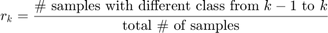
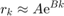
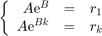
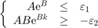
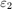
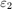
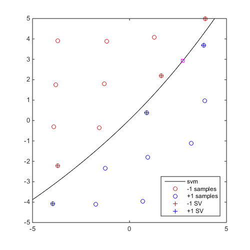
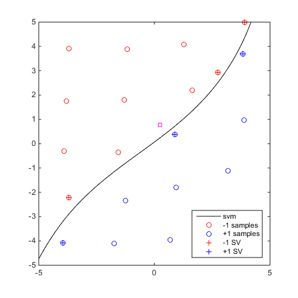
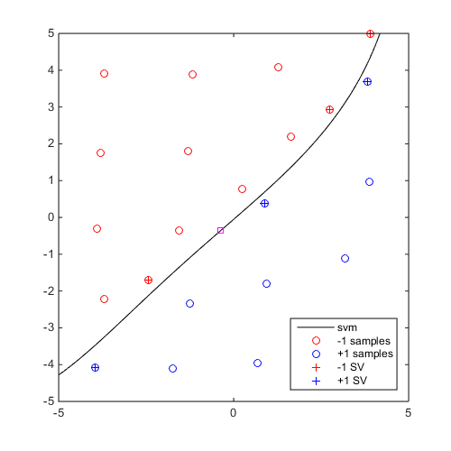
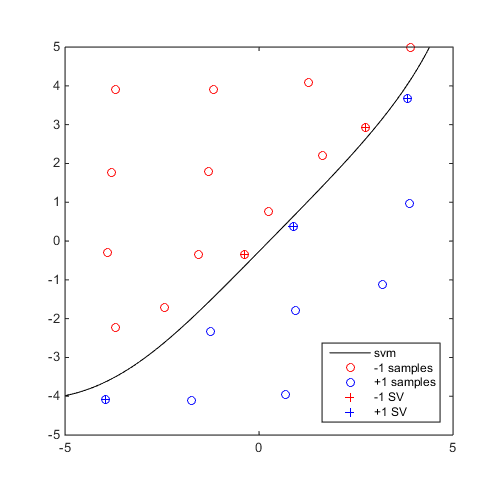

CODES / sampling / edsd
Perform Explicit Design Space Decomposition
Contents
Syntax
- Mcol=CODES.sampling.edsd(f,M,lb,ub) performs EDSD on f, using an initial meta-model M, within lb and ub and returns the collection of meta-model Mcol.
- Mcol=CODES.sampling.edsd(...,param,value) uses a list of parameters param and values value (see parameter table).
Description
This function performs Explicit Design Space Decomposition (EDSD) as described in Basudhar and Missoum (2010) and Basudhar (2011). Essentially, EDSD sequentially refines an initial meta-model (an SVM in Basudhar's work) using max-min and anti-locking samples. Please refer to their specific documentation for details. This implementation relies on the numerical advances presented in Lacaze and Missoum (2014).
In Basudhar and Missoum (2008), a convergence metric is introduced based on the change of class of "convergence" samples from one iteration to another:

This ratio is further fitted by an exponential model:

where A and B (≤0) are constants to be determined and k the iteration considered. If 'conv_coef' is set to 'fit', A and B are chosen so as to minimize the least square error. If 'conv_coef' is set to 'direct' at iteration k, A and B are chosen such that:

The algorithm stops when both of the following conditions are satisfied:

where  and  are the user defined parameters:
and  are the user defined parameters:
'eps_1' and 'eps_2' respectively.
Plot functions
The edsd function can accept a 'plotfcn' option. A function or a cell array of functions can be passed to the method. These methods should be defined as:
function plotfcn(meta,iter) ... end
where meta and iter are parameters passed to the function by edsd. iter is the last completed iteration and meta is the last trained meta (i.e., the one trained at the end of iteration iter). Each of these function is allocated a figure at the begining of edsd with:
hold on
For example:
function plot_meta(meta,iter) clf; meta.isoplot; title(['Iterations ' num2str(iter) ' completed']) end
Parameters
| param | value | Description |
|---|---|---|
| 'schedule' | (1 x 2) positive integer, { [2 1] } | Schedule used to mix "max-min" and "anti-locking" samples. The default schedule, [2 1], specifies the use of 2 "max-min" iterations followed by 1 "anti-locking" iteration. |
| 'iter_max' | positive integer, {30} | Number of iterations |
| 'vectorized' | logical, {true} | Whether the function f is vectorized |
| 'f_Parallel' | logical, {false} | If 'vectorized' is set to false, whether new samples should be evaluated in parallel |
| 'extra_output' | logical, {false} | Whether the function f is returning a second output that needs to be stored and returned (this extra output should be a cell row array) |
| 'conv' | logical, {true} | Should convergence be checked (true) or wait for max_iter (false) (see, Basudhar et al., 2008) |
| 'plot_conv' | logical, {false} | Should convergence be plotted (requires 'conv' to be true) |
| 'conv_coef' | {'fit'} or 'direct' | Method to compute coefficient of the exponential involved in the convergence |
| 'eps_1' | numeric, {4e-3} | Tolerance on class change ratio |
| 'eps_2' | numeric, {5e-4} | Tolerance on class change rate |
| 'x_conv' | numeric, {(1e4 x M.dim) LHS} | Convergence points |
| 'display_edsd' | logical, {true} | Display level |
| 'plotfcn' | cell or function_handle, { [ ] } | A function or a cell array of functions to be executed at the end of each iteration, see Plot functions |
In addition, options from anti_lock, mm and MultiStart can be used as well.
Example
Perform 5 iterations of EDSD and plot the SVM collection
DOE=CODES.sampling.cvt(20,2,'lb',[-5 -5],'ub',[5 5]); svm=CODES.fit.svm(DOE,DOE(:,1)-DOE(:,2)); svm_col=CODES.sampling.edsd(@(x)(x(:,1)-x(:,2)),svm,[-5 -5],[5 5],'iter_max',5); for i=1:5 svm_col{i}.isoplot('new_fig',true,'lb',[-5 -5],'ub',[5 5]) if i<5 plot(svm_col{i+1}.X(end,1),svm_col{i+1}.X(end,2),'ms') end end axis square
EDSD: iteration 1 out of 5 is done EDSD: iteration 2 out of 5 is done EDSD: iteration 3 out of 5 is done EDSD: iteration 4 out of 5 is done EDSD: iteration 5 out of 5 is done EDSD: Stopped because maximum number of iteration was reached   
Mini Tutorial
 |
A mini tutorial of the capabilities of the edsd function. |
References
- Basudhar and Missoum (2008): Basudhar A., Missoum S., (2008) Adaptive explicit decision functions for probabilistic design and optimization using support vector machines. Computers & Structures 86(19):1904-1917 - DOI
- Basudhar and Missoum (2010): Basudhar A., Missoum S., (2010) An improved adaptive sampling scheme for the construction of explicit boundaries. Structural and Multidisciplinary Optimization 42(4):517-529 - DOI
- Basudhar, 2011: Basudhar A., (2011) Computational optimal design and uncertainty quantification of complex systems using explicit decision boundaries. The University of Arizona - DOI
- Lacaze and Missoum (2014): Lacaze S., Missoum S., (2014) A generalized "max-min" sample for surrogate update. Structural and Multidisciplinary Optimization 49(4):683-687 - DOI
See also
Copyright © 2015 Computational Optimal Design of Engineering Systems (CODES) Laboratory. University of Arizona.
|
|
Computational Optimal Design of Engineering Systems |

|